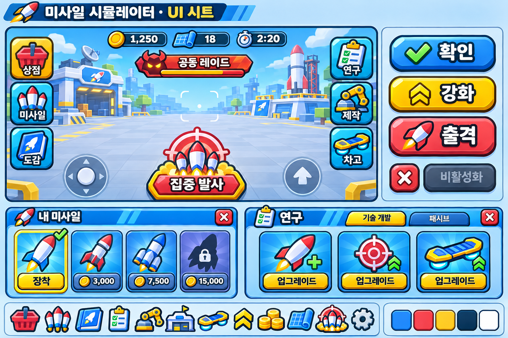

미사일 시뮬레이터 · UI v04
파랑·빨강·노랑, 굵은 외곽선과 입체 버튼. UI 시트와 새 아이콘 12종.

투명 아이콘 아틀라스
상점shop
미사일missiles
도감codex
연구research
제작craft
기지base
차고garage
강화upgrade
코인coins
연구자료research_data
집중 발사focus
설정settings
디자인 검토용 시안입니다. 시트의 가격·수치·기능은 예시이며, Studio 적용 전입니다. 실제 화면의 글자·수치·버튼 상태는 Roblox 네이티브 UI로 구성합니다.